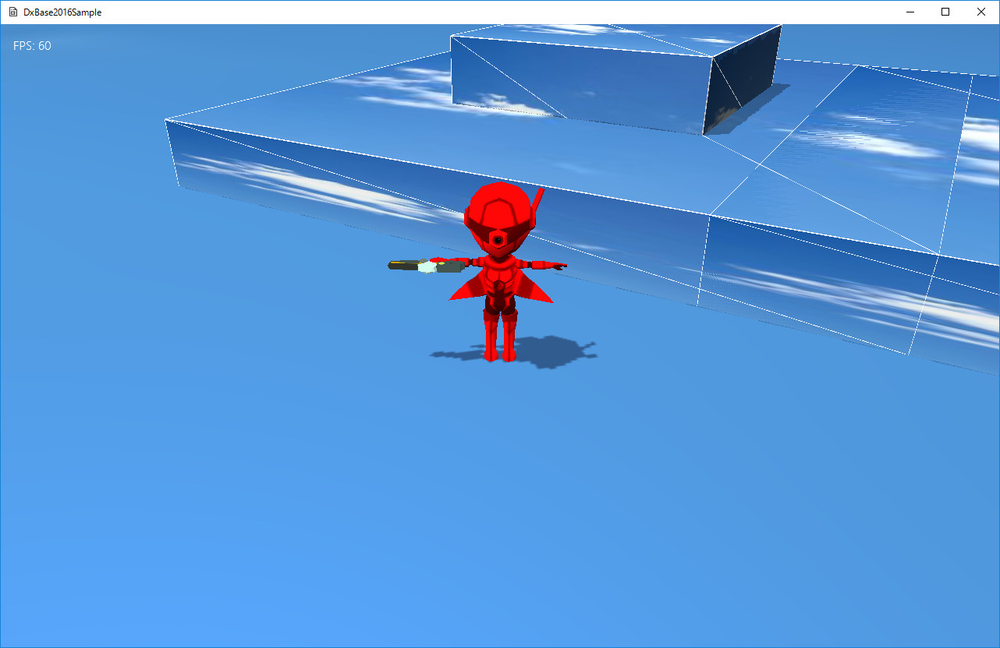

３０８．モデルの表示
フレームワークにおけるモデル形式
DxBase2016フレームワークでは、モデルの形式を
独自フォーマットであつかいます。
この形式は、
.bmfという拡張子を持ち、
Autodesk社のFBXフォーマトを
データ変換ツール(Fbx2Bin)により変換して使用します。
Fbx2Binツールについての詳細は、
ツール項目を参照ください。
さて、フレームワークの前バージョン
DxBase2015フレームワークでは、
Autodesk社のFBX_SDKをゲームにセットアップし、表現していました。
しかし、以下のような問題（というか課題）が出てきました。
１、FBXフォーマットは多機能でありますが、多機能すぎて、すべての形式に対応するのはまず難しいということ。
２、リアルタイムでモデルを動かすには、多機能さを前面に出すより、カスタマイズのしやすさや、
むしろ、使わない機能を省略した形でのデータが望ましい、ということ。
３、FBX_SDKがどんどん巨大になっていること。新しいバージョンに常時差し替えるのは、リスクが大きい。
４、データ変換ツールFbx2Binツールをカスタマイズすることにより、それぞれのゲーム独自のモデル形式を
作成できます。モデルデータの勉強のためにも、このほうが望ましい、と思われます。
これらの理由により、
Autodesk社のFBXフォーマトを
独自フォーマットに変換して利用するという方法に切り替えました。
Fbx2Binツールと独自フォーマットについては、前バージョンでも、
シンプルフレームワークでのモデルの表現に使用していました。ですから扱い的には、
前バージョンのシンプルフレームワークと同じ（ファイル読み取り部分をフレームワーク内に入れたもの）ということになります。
スタティックなモデルの表示
DxBase2016フレームワークでは、モデルにボーンやアニメーションを含まないモデルを
スタティックモデルを表現し、ボーンやアニメーションを含むものを
ボーンモデルと表現します。この項は、
スタティックモデルの解説です。
Sample308ディレクトリのソリューションを開いて、リビルド、実行してみましょう。すると以下の画面が現れます。

図3008a
もとになっているのは
チュートリアル006です。球体のプレイヤーをモデルにしています。
このモデルは、前項のSpriteStdioのサンプルと同様、WiZの学生が作成したものです。FBXファイルとして作成したモデルを、
Fbx2Binツールによってスタティックメッシュとして保存しています。
mediaディレクトリ内の、
Chara_R.bmfがモデルファイルです。モデルに使用するテクスチャ（Chara_R.png）を同じディレクトリに保存しておきます。
スタティックモデルを読み込むには、あらかじめ
リソース登録をしておきます。テクスチャと同様です。
このサンプルでは、
GameStage.cppのGameStage::CreateResourses()内で行っています。
void GameStage::CreateResourses(){
//中略
App::GetApp()->RegisterStaticModelMesh(
L"Chara_R_MESH", App::GetApp()->m_wstrRelativeDataPath, L"Chara_R.bmf");
}
ここでは、基準ディレクトリが
App::GetApp()->m_wstrRelativeDataPathで、ファイル名が
L"Chara_R.bmf"のモデルを読み込み、
L"Chara_R_MESH"という
キー名で登録します。こうしておくと、各オブジェクトで使用できるようになります。
プレイヤーでの記述は以下のような感じです。
Player.cppの
Player::OnCreate()に記述します。
void Player::OnCreate(){
//中略
Matrix4X4 SpanMat; // モデルとトランスフォームの間の差分行列
SpanMat.DefTransformation(
Vector3(1.0f, 1.0f, 1.0f),
Vector3(0.0f, XM_PI, 0.0f),
Vector3(0.0f, -0.5f, 0.0f)
);
//影をつける（シャドウマップを描画する）
auto ShadowPtr = AddComponent<Shadowmap>();
//影の形（メッシュ）を設定
ShadowPtr->SetMeshResource(L"Chara_R_MESH");
ShadowPtr->SetMeshToTransformMatrix(SpanMat);
//描画コンポーネントの設定
auto PtrDraw = AddComponent<PNTStaticModelDraw>();
//描画するメッシュを設定
PtrDraw->SetMeshResource(L"Chara_R_MESH");
PtrDraw->SetMeshToTransformMatrix(SpanMat);
//透明処理
SetAlphaActive(true);
//中略
}
ここで設定されている
SpanMatというのは、モデルのローカル座標と、衝突判定などのゲームで操作される座標
の差分を埋める行列です。このモデルは、原点が、足の下にあり、そのため、少しY座標を下げています。また、向きがプレイヤーと逆なのでY軸で回転させています。このように、グラフィッカーが作成したモデルをゲーム盤に合わせるのに使用します。
この行列は、シャドウマップ及び、描画コンポーネントに設定します。
スタティックモデルの描画コンポーネントは、
PNTStaticModelDrawです。AddComponentで設定します。
このコンポーネントはテクスチャの設定は必要ありません。テクスチャはメッシュデータの中に含まれているので、メッシュの作成時に内部で設定されます。ただ、テクスチャファイルをモデルと同じディレクトリを基準に探すので、テクスチャの保存位置は注意が必要です。同じディレクトリ内においておけば安全です。
以上で設定は終わりです。アニメーションはしませんが、チュートリアル006のように、Aボタンでジャンプし、固定ボックスに乗ることも可能です。
また、モデルのデータ形式や読み込むときの動作などは、
Fbx2Binツールの解説を参照ください。